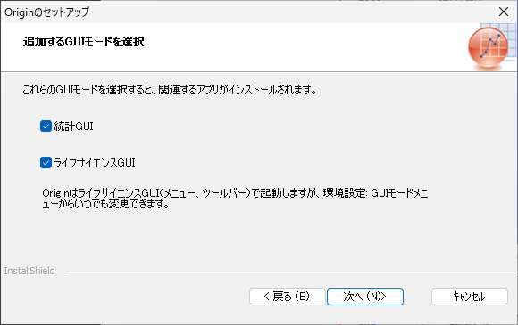
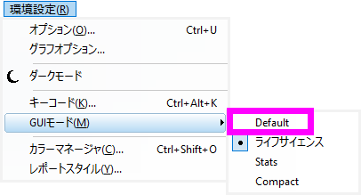

OriginのGUIモード
GUI-Modes
Origin では、インストール時に3つのGUIモードを選択できます。
- デフォルトモード: Origin の従来のインターフェースで、すべてのメニュー、ツールバー、ボタン、グラフ作成オプションを利用できます。
- 統計モード: 一連のアプリがあらかじめインストールされ、統計解析や品質管理のワークフローに適したインターフェースを提供します。
- ライフサイエンスモード: 一連のAppがあらかじめインストールされ、用量反応、ANOVA、生存分析など、薬理学および生物学的アッセイのワークフローを効率化するインターフェースを提供します。
- コンパクトモード: ワークスペースを簡素化し、ボタンを削減・再配置することで、初心者でも使いやすいインターフェースを提供します。

そのため...
| メニューやボタンが見つからない場合、またはOriginLab社のドキュメントの手順に従いにくい場合は、
|
1. Originが統計モードまたはライフサイエンスモードで実行されているか確認します
- 現在のGUIモードは、環境設定:GUIモードで確認できます。
2.Originがいずれかのモードで実行されている場合、次のいずれかを行います
デフォルトモードへの切り替え
デフォルトモードに切り替えるには、メニューから 環境設定：GUIモード：デフォルト を選択します。

または
検索バーを使用する
メインメニューの横にある検索バーに、メニュー、ボタン、またはアプリの名前を入力して検索し、実行します。